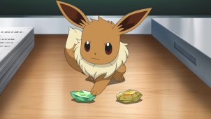
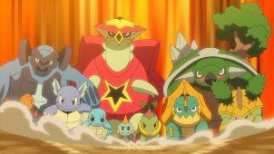

Es un mundo grande y sabes dónde hallar a Ash y Goh, ¡combatiendo y capturando Pokémon desde Kanto hasta Galar! Con Pikachu, Cinderace y sus otros Pokémon, nuestros héroes continúan su viaje por todo el mundo investigando Pokémon para el Laboratorio Cerezo.

¡Entrenar o no entrenar!
Una misteriosa Eevee huye del laboratorio y se encuentra con Chloe. Entretanto, el Team Rocket urde un plan para robar los Pokémon de algunos estudiantes.
¡Un hueso de aquí, un hueso de allá!
Ash, Goh y Chloe parten hacia la región Galar para examinar sus inusuales fósiles. Los investigadores del lugar quieren reconstruir a los antiguos Pokémon.
¡Pruebas para un futuro maestro!
Mientras investigan una aparición masiva de Geodude en el Túnel de Roca, Ash y Goh conocen a un entrenador que acepta un gran reto: ¡una batalla con Gurdurr!
¡Cómo hacer que se vayan de la granja!
Cuando un exalumno del Profesor Cerezo pide que lo ayuden con el desastre que causó un grupo de Diglett y Dugtrio en su granja, Goh, Ash y Chloe van a echar un vistazo...
¡Sanando al sanador!
Después de escuchar que el legendario Suicune fue visto en un lago, Ash y Goh viajan a la región de Johto. Allí descubren un complot para contaminar las aguas.
¡Sobble espía una estrategia sigilosa!
Goh y Ash visitan el set de una popular película de espías. Cuando el astro Inteleon frustra un ataque del Team Rocket, Sobble halla una fuente de inspiración.
¡Cuento del Bosque Lumirinto y tú!
Chloe, Ash y Goh van al Bosque Lumirinto para averiguar más sobre las formas de Galar de Ponyta y Rapidash. En el bosque, cada uno vive sus propias aventuras.
¡En busca de la caballería!
Ash y Goh oyen hablar de Tileo del Alto Mando de la región de Kalos y van a su castillo para someterse a su prueba junto con Farfetch'd y Scyther.
¡Recuerdos de una cálida bondad!
Ash y Goh aprovechan la nieve para buscar el Pokémon tipo hielo, y Chloe disfruta una noche de chicas en casa de Chrysa, la asistente del laboratorio.

¡Rodando sin control! / ¡Carrera hacia la meta!
Cuando Pelipper del Equipo Rocket saca demasiados Gulpin de la máquina dispensadora, los problemas llegan rodando a la ciudad. Luego, ¡la carrera empieza con Chewtle!